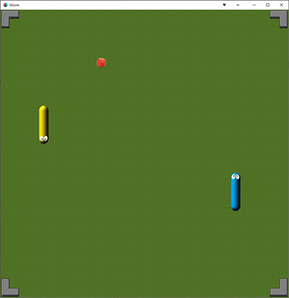

Tutorials for 2D games projects
New components introduced
| Tile source - how to use spritesheets instead of an atlas to store assets for building 2D maps. | |
| Tilemap - how to build level data using a tile source and manipulate it as a 2D array. | |
| Library - how to include dependencies and libraries. |
Worm | Step-by-step tutorial

The classic game of 'Snake' with a two to four player twist. Can you eat the most fruit and be the last worm alive?
In this tutorial we introduce the concept of spritesheets as a memory efficient store of level data for games that require the player to navigate a 2D map or static platforms. Learn how to store spritesheets in a tilesource and then create a game level using a tilemap from the tilesource. This tutorial assumes you already have a knowledge of building games in Defold including input bindings, game objects and scripts. If not, you should attempt the previous tutorials first.
- Stage 1: building the skeletal structure of the game:
- Stage 2: creating a GUI for the title screen:
- Stage 3: creating the playing field:
- Stage 4: adding a worm:
- Stage 5: eating food:
- Stage 6: collision detection with other objects:
- Stage 7: adding the second player.
- Stage 8: hiding the mouse.
- Stage 9: adding some 'snap'.
- Stage 10: adding some 'crackle'.
- Stage 11: adding some 'pop'.
This tutorial has sufficient complexity to be a programming project for OCR A level Computer Science, and comfortably a group B project for AQA A level Computer Science.
What you learned in this tutorial
- A tile source holds equally sized bitmaps (tiles) that allow you to construct graphics for top-down levels and platform games easily.
- A tile map uses the graphics in a tile source to construct a level either at design or run-time.
- Each image in the tile source has a unique number that is applied to the tile map when a tile is placed. The tile map is a large 2D array storing the value of the tile placed in that position which you can manipulate using script code.
- Higher-order data structures such as queues can be used to track objects that are made of many parts.
- Libraries extend the functionality of a programming language by including code in your project that other people have written.
 Craig'n'Dave | Version 1.3
Craig'n'Dave | Version 1.3